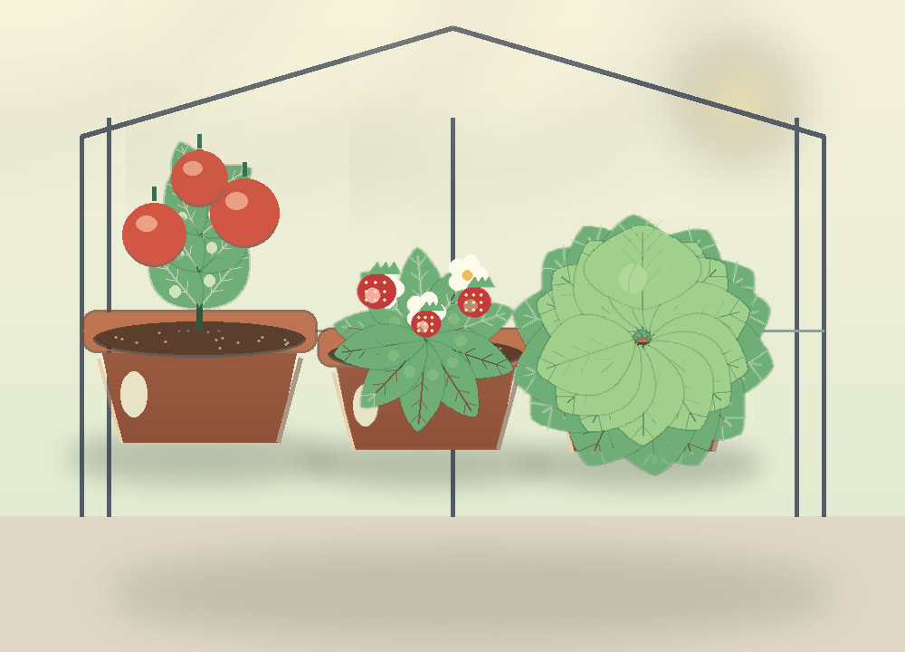

GREENHOUSE 05 · INQUIRY & NURTURE
Grow the
evidence.
Five crops. Four decisions each. Read the plant, adjust one thing, and see what the greenhouse gives back.
No real-time waiting: every decision moves the greenhouse clock forward one day.
5crops
4stages each
500points

THE FIVE BEDS
Meet the crops
Every crop has a different limiting factor. The same “more” will not work twice.
SEASON · BED 1 OF 5
Lettuce
生菜 · 光照與水分
DAY 1 / 4
BED 1 / 5
SCORE 0
DAY 1 · SPROUT
HEALTHY
FIELD OBSERVATION
The seedlings are leaning towards the light.
SCIENTIST'S NOTEBOOK
What the crop is telling you
- Your observations will appear here.
CROP REPORT · ONE SEASON
Harvest day.
0/ 100 for this crop
SEASON COMPLETE · FIVE CROPS
The greenhouse is alive.
0/ 500
Best on this device: 0 / 500